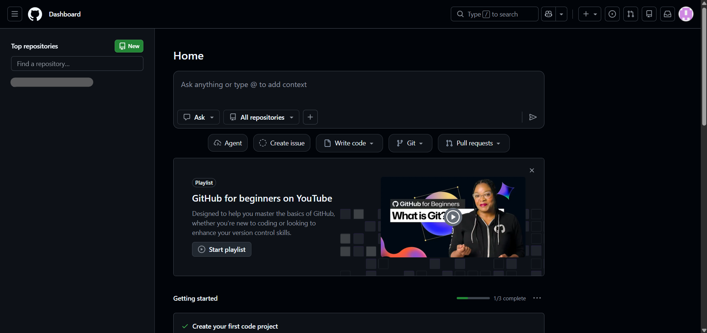

OXON TECH
Creating Free Websites Using GitHub
Why We Need a Website
Establishing a centralized domain acts as your professional source of truth, free from algorithmic suppression. By using GitHub, you maintain absolute control over your digital narrative and engineering portfolio.
What Are Its Uses
A website serves as an interactive hub for robotics blueprints, high-level investigatory projects, and live resumes that demonstrate coding proficiency directly through the browser.
Economic Strategy
Standard hosting models require recurring annual capital. GitHub Pages bypasses this by hosting static assets directly from your repositories at absolute zero cost.
Deployment Protocol
1. Sign In to GitHub
Authenticate your credentials within the security portal.

2. Dashboard Initialization
Navigate to the command hub where your repositories are listed.

3. Repository Configuration
Create a repository named username.github.io.

4. Payload Deployment
Upload your index.html directly to the master branch.

Advanced Site Management
Custom Domain Integration
While the .github.io suffix is standard, you can mask this by purchasing a custom domain (e.g., .com or .tech) and mapping it within the GitHub settings menu for a fully premium brand feel.
Version History & Rollbacks
Every change you push is tracked. If a new design fails or contains errors, you can instantly revert to a previous working "Commit," ensuring your site never remains in a broken state for your global visitors.
Automated Workflows
Advanced users can implement GitHub Actions. This allows the system to automatically check your code for bugs or optimize image sizes every single time you push an update to your website.